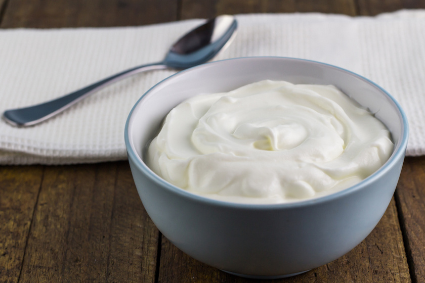
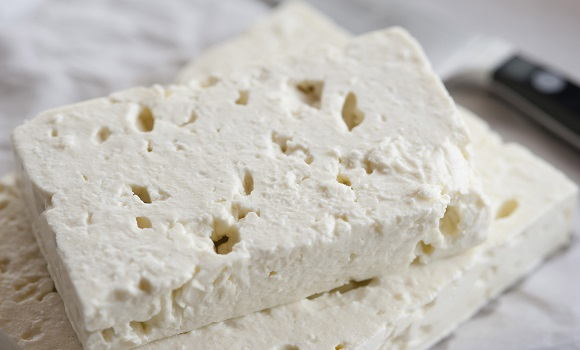
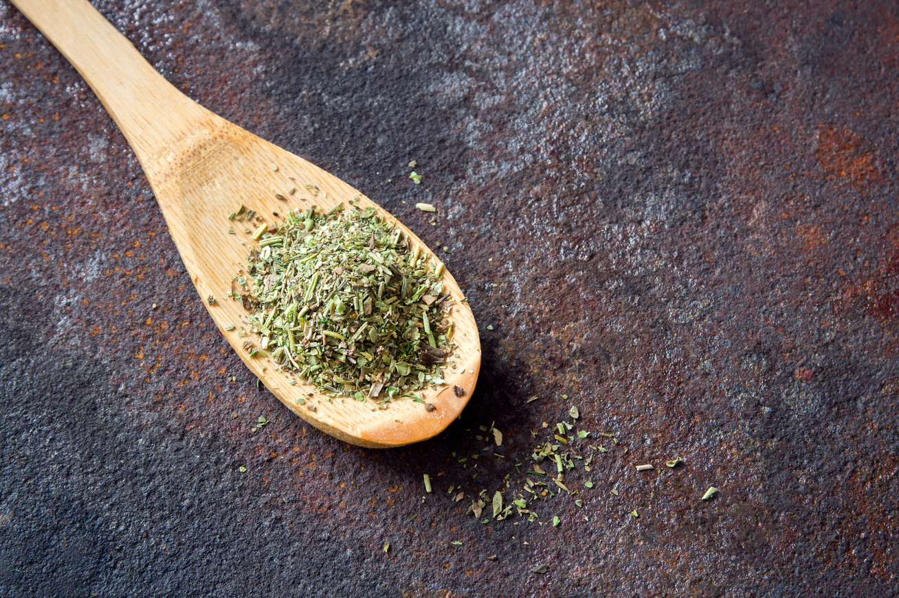

Az igazi görög joghurt eredetileg juhtejből készült, de ma már inkább tehéntejből készítik. Az általunk ismert joghurtnál magasabb a zsírtartalma (10%), ezért sűrűbb és krémesebb, viszont ennek ellenére nem hizlal, sőt a karcsúsodni vágyók diétás étrendjének elengedhetetlen kiegészítője! A felszíne sima és bársonyos, ízre pedig nem savanyú. Ezt a savó leszűrésével érik el (muszlinon, papíron, vagy szitán keresztül lecsepegtetik). Alacsony szénhidrát, laktóz és só tartalma miatt egészségesebb, mint a sima joghurt, vérnyomáscsökkentő, immunerősítő és rákellenes hatása is ismert. Felhasználását tekintve nagyon változatos, édes és sós ételekhez egyaránt kitűnő alapanyag. A görögök előszeretettel fogyasztják mézzel, de például ez a Tzatziki alapja is. A görög joghurt név az Európai Unión belül védett, tehát csakis Görögországban előállított termék nevezhető így.
A méltán híres Görög saláta legfontosabb alapanyaga a feta. Már az ókori görögök idejében is ismert és kedvelt volt. Eredetileg kecsketejből készül, ez sokkal krémesebb és puhább, mint a juh-, vagy a tehéntejes változat. A színe hófehér, az íze jellegzetes savanykás, és kissé sós, az állaga tömör ugyan akkor krémes, viszont könnyet törik és morzsolódik. Általában sós lében vagy (fűszeres) olajban tárolják. Ha kimérve vesszük netán Görögországban a piacon, ügyeljünk rá, hogy megfelelő mennyiségű lét is adjanak hozzá ( el kell, hogy lepje a sajtot), és otthon is ebben tároljuk, különben kiszárad. Mára már nem csak a görög, hanem az egész mediterrán konyha elengedhetetlen alapeleme. 2002 óta a feta név is védett, és csakis a Görögországban előállított termék nevezhető feta sajtnak, amelyik juh és kecsketejből készül. 2007-től még a „feta-stílusú" vagy „görög sajt" kifejezéseket is betiltotta az EU.
A legfontosabb görög fűszerek, görög bazsalikom, kakukkfű, oregánó, kapor, koriander, a fahéj, a kömény, az olajbogyó, olívaolaj, fokhagyma, és a pálinkájáról jól ismert ánizs.
Már az ókorban is a görög társadalmi élet egyik legmeghatározóbb eleme a lakoma volt, ezt a remek szokásukat mind a mai napig megőrizték. Az emberek gyakran összejönnek barátokkal családdal tavernázni. A tavernák a görög éttermek egyik fajtája, általában családi vállalkozás, és igazi házias görög ételeket lehet fogyasztani. Ezek az étkezdék nem a turistáknak készültek, az átlag görögök is előszeretettel látogatják. Törzshelyeiken otthonosan mozognak, összetolják az asztalokat, és mivel a kínálat szinte naponta változik, a pincértől érdeklődnek az aznapi ajánlat felől. A taverna pincérje mindig a legtekintélyesebb férfihez fordul oda először, és tőle várja a rendelést. Mivel görögök evés közben (is) beszélgetnek, ezért sok az előétel, amit csipegetni lehet, és kevesebb a főétel, a desszert pedig többnyire szezonális gyümölcs. Az süteményeik, az 500 éves török ráhatásnak köszönhetően, nagyon édesek és tocsognak a mézben, viszont vannak spenóttal, padlizsánnal, hagymával vagy tojással töltött pitéik, amiket félkészen, a boltokban is meg lehet venni. A tavernázás mellett a Bazi nagy görög lagzi c. filmből jól ismert, és túlzások nélkül bemutatott éjszakába nyúló, kertben-báránysütős, szirtaki táncos dínom-dánom is közkedvelt módja az étkezésnek. Még a koccintás is úgy zajlik, ahogyan a filmben láthatta az ember. „Sztin ijia szasz" (egészségedre) felkiáltással összekoccintják a poharaik tetejét. Oda kell figyelni, hogy tényleg csak a poharak teteje érjen össze, ugyanis ha az alsó része is összekoccan azt sértésnek, sőt kifejezetten rossz ómennek tartják.